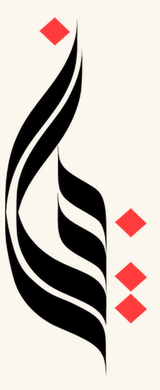

بيان

BAYAN
Til va qalb orasidagi ko‘prik
Arabcha–o‘zbekcha lug‘at va arab tilini
o‘rganish platformasi
4 tomlik “Al-Qomus” akademik lug‘ati, mashhur arab manbalari, sun’iy intellekt yordamchisi,
kitoblar va testlar — bitta ilovada.
BAYAN
02 / 14
Bir qarashda
Bayan raqamlarda
100 000+so‘z va ibora4 tomlik “Al-Qomus” akademik lug‘ati
4 taqo‘shimcha manbaAl-Vasit · Mavsua · Maqollar · Vikipediya
111 takitobKamil Kiloniy bolalar kutubxonasi
1017 tatest savoliNahv ilmi bo‘yicha 16 bob
300+ilmiy maqolaBaheth manbasidan, bo‘limlarga ajratilgan
51 tamavzuMavzulashtirilgan lug‘atlar
Bayan AItahlil · tarjima · misollarSun’iy intellekt yordamchisi
Oflayninternetsiz ishlaydiLug‘at har doim yoningizda
بيان
BAYAN
03 / 14
Asos
4 tomlik Al-Qomus
ilova ichida
Arabcha–o‘zbekcha qomusiy lug‘at to‘liq raqamlashtirildi.
So‘z qidirsangiz — javob aynan shu kitob bazasidan keladi.
Prof. Ne’mat Ibrohimov rahbarligida, ~10 yil davomida tuzilgan · “G‘afur G‘ulom” nashriyoti
100 000+so‘z va ibora
4 tomakademik nashr
Qur’on va mumtozso‘zlar ham qamrab olingan
BAYAN
04 / 14
Bitta qidiruv
Bitta so‘z — bir nechta manba
Arabcha so‘zni qidirsangiz, turli manbalardagi ma’lumotlar bir joyda jamlanadi.
AL-QOMUSالقاموس
Arabcha–o‘zbekcha akademik lug‘at, 4 tom
SINONIM / ANTONIMمرادفات · أضداد
Ma’nodosh va zid so‘zlar bir joyda
VIKIPEDIYAويكيبيديا
Arabcha ensiklopedik ma’lumot
AL-VASITالمعجم الوسيط
Arabcha izohli lug‘at, jild va bet bilan
AL-MAWSU‘Aالموسوعة الفقهية
Kuvayt fiqh ensiklopediyasi
MAQOLLARمجمع الأمثال
So‘z qatnashgan mashhur arab maqollari
MISOLLAR + AIأمثلة
Bayan AI yangi misol jumlalar yaratadi
بيان
BAYAN
05 / 14
Lug‘at
So‘zni yozing —
bir zumda toping
⚡
Tezkor qidiruvNatijalar yozayotganda chiqadi
📴
Oflayn ishlaydiInternetsiz ham to‘liq lug‘at
✨
AI qidiruvLug‘atdan topilmagan so‘zlar uchun
🔗
To‘liq so‘z sahifasiMa’nolar, ko‘plik, o‘zak, sinonim va antonimlar
BAYAN
06 / 14
Manbalar
Arab olamining
mashhur manbalari
So‘z sahifasining o‘zidan bir bosishda ochiladi — jild va bet raqami bilan.
Al-Vasitالمعجم الوسيط
Fiqh ensiklopediyasiالموسوعة الفقهية
Matallarمجمع الأمثال
Vikipediyaويكيبيديا
بيان
BAYAN
07 / 14
Sarf va misollar
Fe’l tuslanishi va
AI misollari
📊
To‘liq sarf jadvaliMa’lum, majhul va amr — barcha zamirlar bilan
✍️
5 ta yangi misolBayan AI so‘z ishtirokida jumlalar tuzadi
🔄
YangilashIstagancha yangi misollar so‘rang
بيان
BAYAN
08 / 14
Sun’iy intellekt
Bayan AI — grammatika
va tarjima
🧠
Grammatik tahlil (i’rob)Jumladagi har bir so‘zning o‘rni tushuntiriladi
🇺🇿
O‘zbekcha tarjimaTahlil ostida darhol beriladi
💬
Ikki tomonlama tarjimonArabcha ↔ o‘zbekcha, harakatlari bilan
BAYAN
09 / 14
Kitob o‘qish
O‘qing, bilmagan
so‘zni bosing
Kamil Kiloniyning 111 ta hikoya kitobi. Notanish so‘z ustiga bosing — ma’nosi chiqadi,
butun paragrafni esa Bayan AI tarjima qiladi.
111 ta kitob
So‘zni bosing — tarjima
Butun blok — AI tarjimasi
بيان
BAYAN
10 / 14
Yodlash
So‘zlarni o‘z bo‘limingizga
yig‘ing
🔖
O‘z to‘plamingizHar bir kitob yoki mavzu uchun alohida daftar kabi
🗂️
Bir so‘z — bir necha to‘plamBelgilang va saqlang
🍎
51 ta tayyor mavzuTabiat, kasblar, ob-havo va boshqalar
بيان
BAYAN
11 / 14
Bilimlar hovlisi
Testlar va
ilmiy maqolalar
📚
Nahv ilmi: 16 bob1017 ta savol, natija darhol ko‘rinadi
🔀
Tasodifiy testBoblarni o‘zingiz tanlaysiz
📰
300+ ilmiy maqolaNahv, sarf, i’rob, imlo, balog‘a bo‘limlari
بيان
BAYAN
12 / 14
Maqol va hikmatlar
Arab donoligi,
chiroyli ulashish
💬
Maqol va hikmatlarArabcha, o‘zbekcha va inglizcha tarjimasi bilan
🎨
O‘nlab shablon va rangInstagram, Telegram uchun tayyor rasm
بيان
BAYAN
13 / 14
Foydalanuvchilar fikri
Ular nima deydi?
IY
Ismoil YaqubGoogle Play
★★★★★
Juda qulay! Bir so‘zga 10–15 ta eng yaqin ma’nolarni chiqarib beradi — sinonimlar bilan o‘zingizga keragini topasiz.
AV
Ali ValiyovGoogle Play
★★★★★
Mashaalloh, zo‘r ishlayabdi. Oflaynligi uchun alohida rahmat!
SM
Sohibjon MannonovGoogle Play
★★★★★
Hammaga tavsiya etaman — orzudagi lug‘at ilova bu. Ajoyib!
IM
Iskandar MukhammadjanovGoogle Play
★★★★★
Ilova juda foydali bo‘libdi. Barchaga tavsiya qilaman.
بيان
BAYAN
14 / 14
Bugunoq boshlang
Bayan bilan
arab tili oson
◆ Al-Qomus · 100 000+ so‘z
◆ Al-Vasit · Mavsua · Maqollar
◆ Bayan AI
◆ Sarf jadvali
◆ 111 kitob
◆ 1017 test
◆ To‘plamlar
◆ Oflayn
bayanai.uz
Bayan — til va qalb orasidagi ko‘prik